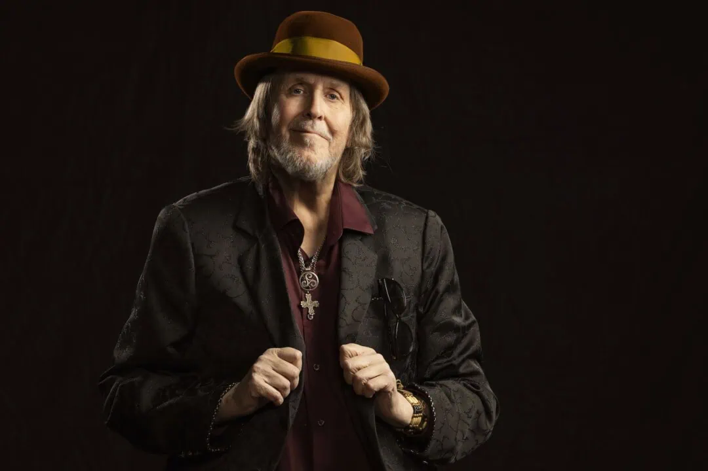

12.1.2026 08:00 Saku Schildt
 Kuva: Mikko HarmaVanha kunnon Hector esiintyy loppuvuodesta areenakeikalla. Kotimaisen populaarimusiikin veteraani nähdään Helsingin Veikkaus-areenalla 5. joulukuuta 2026. Lavalla musisoi artistin tukena miehen kahdeksanhenkinen Power Band, johon kuuluvat Risto Niinikoski (rummut, laulu), Matti Maijanen (basso), Pekka Kuorikoski (koskettimet, laulu), Pekka Gröhn (koskettimet), Jarmo Nikku (kitara), Jaakko Kiikeri (kitara), Panu Syrjänen (saksofoni) ja Janne Toivonen (trumpetti).
Konsertissa kuullaan ennakkotietojen mukaan läpileikkaus artistin urasta sekä aivan uusi, myöhemmin tänä vuonna julkaistava kappale. Biisin ilmestymisajankohdasta ei kerrota vielä sen tarkemmin, jäämme odottamaan lisätietoja.
Tapahtuman yleinen lipunmyynti alkaa 19. tammikuuta. Ennakkomyynti tapahtuu Live Nationin verkkosivujen välityksellä. Lippujen hintoja ei tiedotteessa mainita, mutta parin päivän päästähän tuo sitten selviää.